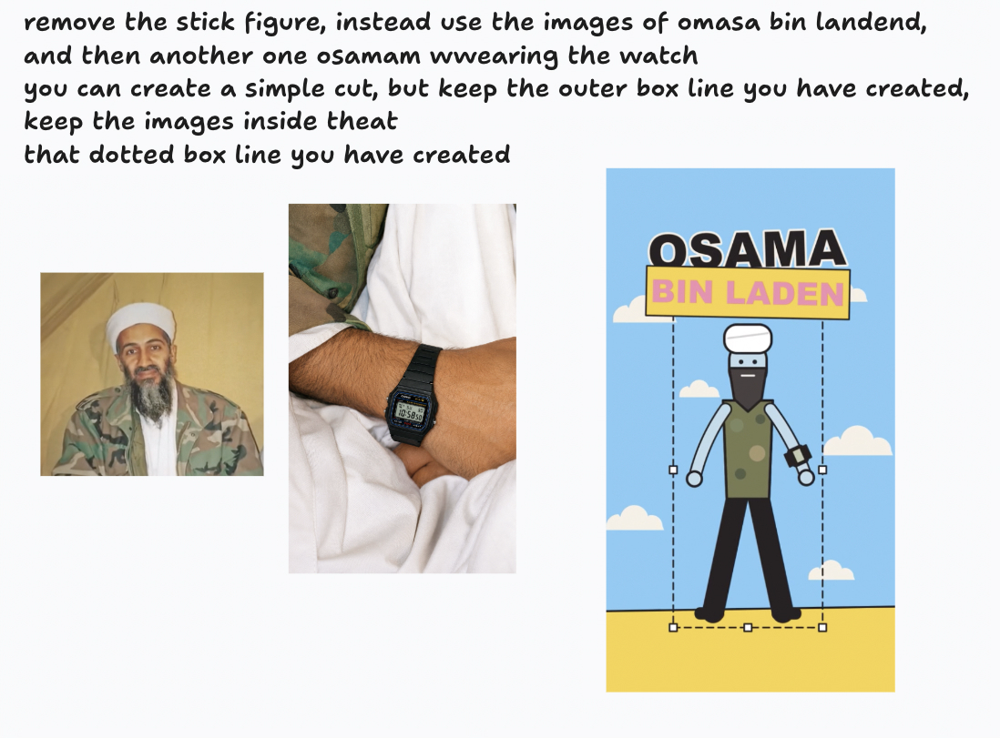
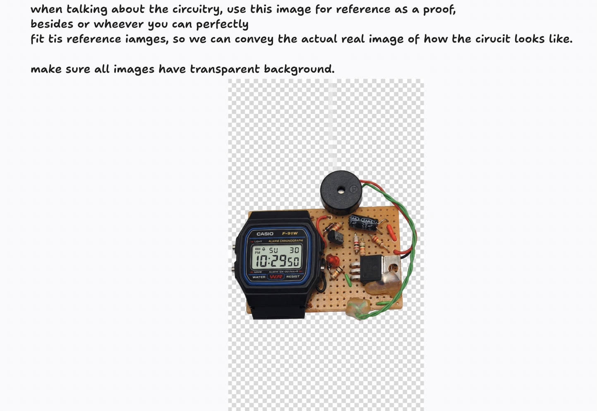

A casebook for video editors · agentic AI · Sep 24–25, 2026
How one prompt became a 48-second animated reel
An Instagram voice-over about the Casio F-91W watch, remade as a flat, colourful 2D animation in the style of Mike Lamb's iluli channel trailer. Claude Code wrote, drew, checked and assembled every frame. Here is every prompt, every version and every file, from the first message to the After Effects export.
5versions (v0 → v4)
10scenes, one per spoken beat
48.5 s720×1280 vertical reel
≈3 hfrom first prompt to v3
809After Effects layers exported
The idea in 60 seconds
Start, ask, get
What we started with
A 48-second Instagram reel by 709 Lab: a presenter explaining why the Casio F-91W was used as a bomb timer.
The style we wanted
"iluli by Mike Lamb – Channel Trailer" on YouTube: flat colour fields, thin ink outlines, pops with overshoot, 12 drawings a second.
What came out (v4)
The same voice-over, fully animated, with the real watch and circuit photos cut out and placed into the flat style.
Nothing here was drawn by hand in Premiere, Illustrator or After Effects. The AI wrote small programs that draw each frame, rendered them, stitched them to the original audio, watched its own output, and fixed what didn't match. The editor's job was direction: a clear brief, "explain it back first", annotated screenshots, and asking for side-by-sides.
Everything we gave it
Inputs
The first prompt
Then, two minutes later: You have ultracode mode. Assume infinite tokens, don't stop, keep going; I will keep putting in money. But you only have 30 minutes.
Language cleaned and spelling corrected for this casebook; see 01_chats/CLEANUP_LOG.md.
Reference, one frame per second (the AI studied all 48)
The 3 feedback screenshots (round 1 → v3)
Each screenshot is one critique, with arrows and notes drawn on a frame of v2. This was the single most effective prompt in the project.


Your photo folder (pink outline = used in the reel)
Full-resolution files, including the three layered PSDs (≈300 MB), are in 00_inputs/04_your_photo_folder_Casio_F91W/. Transparent cut-outs the AI made from them are in 04_docs_and_workflow/photo_cutouts/.
Top to bottom · times in IST
Step by step: what we typed, what it did, what came out
The revision history
Versions v0 → v4, side by side
Every version was kept, never overwritten. Each comparison puts the older version on the left and the newer one on the right, with sound.
No jargon version
How the machine works
Think of it as a tiny animation studio made of programs. Instead of keyframing by hand, the AI writes instructions like "draw a pink circle here, make it pop at 7.5 seconds", and a render engine turns those instructions into pictures.
Listen
Whisper (a speech-to-text model) writes down every word with its start and end time.
Study the look
The reference is cut into stills. Colours are sampled, line widths measured, timing counted. Result: a written style guide.
Build a toolkit
One shared file of "brushes": the palette, clouds, sparkles, rays, pops, text styles, the watch.
Write scenes
One small program per spoken beat (10 scenes). Several AI helper agents write them at the same time.
Render frames
Each scene draws its pictures: 12 per second, 582 in total, saved as PNG images.
Assemble
ffmpeg (a free video tool) stacks the frames into an MP4 and lays the original voice-over under it.
Critique and fix
Agents look at stills of their own scene, list problems, fix, and re-check. A "judge" scores it against the reference.
Your feedback
Annotated screenshots and real photos. Photos get their backgrounds removed automatically.
Version and compare
Each release is saved as vN, with a side-by-side video against the previous version.
Hand off
All context is written into files (HANDOFF.md, CLAUDE.md) so a fresh session can continue exactly where the last stopped.
Why code instead of a timeline?
Because the AI can read and write code, but it can't drag keyframes in a UI. Code also makes every change exact and repeatable: "move the label 40 px up" is one edit, re-rendered in seconds (all 582 frames render in about 3 seconds).
What "agents" are here
Helper copies of Claude that each get one job, for example "write scene 5" or "critique scene 7". They run in parallel, like a team of junior animators, and the main session checks their work. Rule learned: one scene file per agent, so they never overwrite each other.
The full conversation, cleaned
Chats
Every message from the terminal sessions and the desktop session up to v4, plus the After Effects export. Your messages are in yellow, lightly corrected for spelling and grammar. Grey lines are the AI's working steps, shortened to one line each. Language is cleaned; secrets and personal paths are redacted.
Also as Markdown: 01_chats/01_terminal_session_v0-v3.md, 02_desktop_session_v4.md, 03_after_effects_appendix.md, ALL_PROMPTS.md.
Handing it to a human editor
After Effects export (from v4)
The reel was drawn by code, so there were no layers. The AI re-ran the v4 drawing code and split every drawing step into its own layer:
598 image layers with 12,222 keyframes (Position, Scale, Rotation, Opacity).
211 PNG-sequence layers for things whose shape changes (rays, zig-zag pulses, the drawn guy's limbs).
10 scene comps inside one main comp, the voice-over, and a marker for every spoken line.
To open: in After Effects choose File › Scripts › Run Script File… and pick build_casio_v4.jsx inside casio_v4 folder. Then Save As gives you the .aep.
Checked by re-rendering every frame from the exported data with After Effects' maths: it matches v4 almost exactly (46 dB average). Not yet tested inside After Effects itself.
Files: 05_after_effects/casio_v4 folder/ (laid out like AE's Collect Files), rebuilt_from_xml_check.mp4, export_v4.py.
Rebuilt only from the XML
What actually steered the result
Lessons for editors
Ask it to explain first
"Explain me what you understood first" caught mistakes before any money was spent. It also revealed the reel had no Hindi, so no transliteration was needed.
Screenshots beat paragraphs
Three marked-up frames produced the biggest jump (v2 → v3). Draw on the frame, point at the thing, say what it should be.
Give it your real assets
Pointing it at a folder of photos let it pick the right ones, remove backgrounds and place them. Name files clearly.
Always ask for the video, with sound
Early previews came as web animations. "Play the audio video version, not html" got real MP4s. Check with your eyes and ears.
Keep every version, compare pairs
Side-by-sides (older left, newer right) make each revision's effect obvious and stop regressions.
Write down the context
Before switching tools, "dump all context into the folder" produced HANDOFF.md. The next session read it and carried on without re-explaining.
Parallel agents are fast, not free
Ultracode launched 10 scene agents at once. Several died on "credit balance too low" and had to be re-run. Watch your spend: this project was estimated at about $14 by v1.
A score is not taste
An AI "style judge" gave v2 6.5/10 against the reference. Useful for a gap list, but your screenshots decided what mattered.
Ask what it just did
"What did you just do?" is a fair question. The AI should list every change and offer to undo it.
Do it again on your own video
Reuse it as a Claude Code skill
The folder skill/reference-style-reel/ in this zip packages the workflow: the prompts, the drawing toolkit, the render / assemble / compare scripts, the handoff templates and the After Effects exporter.
Copy reference-style-reel into ~/.claude/skills/.
Run setup_check.sh once. It tells you what to install (Python, ffmpeg, a transcriber).
Open Claude Code in an empty project folder and paste the brief from templates/prompts/01_brief.md with your two links.
Follow the prompts 02 → 09 in order.
What it can't do: pick your taste. The scenes are written fresh for every video; you still direct with screenshots and feedback.